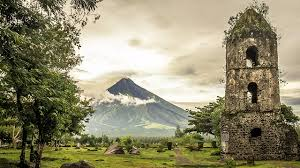

History

History has always been a part of our culture. Below are the list of the top historical places in the Philippines.
- Fort Santiago
- Location: Intramuros, Manila, 1002 Metro Manila
- Why it's famous: The fort is one of the most important historical sites in Manila. Several lives were lost in its prisons during the Spanish Colonial Period and World War II. José Rizal, one of the Philippine national heroes, was imprisoned here before his execution in 1896.
- Facts about Fort Santiago - Click here
- Vigan
- Location: Vigan City, 2700 Ilocos Sur
- Why it's famous: Located in the northern part of the Philippines, Vigan is best known for its heritage village that has preserved Spanish colonial buildings that make you feel like walking into a time warp. The buildings that were built during the 18th century were still intact until today.
- Facts about Vigan - Click here
- EDSA Shrine
- Location: Ortigas Center, Quezon City, Metro Manila
- Why it's famous: It was built by grateful Filipinos to honor the Virgin Mary for her protection and guidance during the world-renowned bloodless ouster of the Marcos dictatorship that led to the return of democracy in the Philippines.
- Facts about EDSA Shrine - Click here
- Magellan's Cross
- Location: P. Burgos St, Cebu City, Cebu
- Why it's famous: The Portuguese and Spanish explorers headed by Ferdinand Magellan planted the cross to signify this important event about the propagation of the Roman Catholic faith in what is now Cebu, in central Philippines. It was planted upon their arrival in Cebu on March 15, 1521.
- Facts about Magellan's Cross - Click here
- Barasoain Church
- Location: Paseo del Congreso St, Malolos, 3000 Bulacan
- Why it's famous: Barasoain Church having earned the title as the Cradle of Democracy in the East, the most important religious building in the Philippines, and the site of the First Philippine Republic, the Church is proverbial for its historical importance among Filipinos.
- Facts about Barasoain Church - Click here